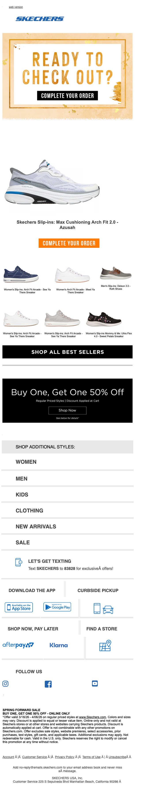

Did you forget something?
| From | SKECHERS <hello@msgs.skechers.com> |
| Received | 2026-04-04 13:21 UTC |
| Score | 5.5/10 |
## Skechers — "Did you forget something?" | Cart Abandonment Email Review
1. Executive Summary
This is a standard cart abandonment email with a clear recovery objective. The core structure works — hero product, reminder CTA, best-sellers as backup options — but the execution undersells the urgency. The BOGO 50% Off offer buried below the fold is the most powerful element in this email and it's wasted in position three. The email also carries several modules (app download, text opt-in) that dilute focus right when the reader should be clicking back to their cart.
2. Business Impact Score: **5.5 / 10**
Functional, not optimized. Gets the job done at a basic level but misses the conversion leverage that a properly prioritized cart abandonment email should deliver.
3. What's Working
- Subject line clarity: "Did you forget something?" is a proven abandonment hook — direct and human.
- Hero product is named and visible: The abandoned product (Skechers Slip-ins Max Cushioning Solo FS 2.0 – Emerald) is shown with its name and a dedicated CTA button. The user knows exactly what they left behind.
- BOGO 50% Off offer: A compelling incentive that gives the reader a reason to act *now* rather than defer again — it's just in the wrong place.
- Best sellers module: Showing 4 alternative products is a smart fallback for shoppers who may not want the abandoned item after all.
4. What's Weak
- Hero product image is small and low-impact. The shoe is rendered at postage-stamp scale. For a cart recovery email, the product should feel aspirational and close-up, not a distant catalog thumbnail.
- BOGO offer is below the fold and below the best sellers grid. This is the strongest purchase motivator in the email, and it appears third — after two other modules. It should be integrated into or immediately adjacent to the hero.
- Two CTAs named "Complete Your Order" compete without hierarchy. The hero section has the label and the button repeating the same copy with no urgency differentiation.
- The "Let's Get Texting" SMS opt-in module is off-mission. A cart abandonment email has one job. Asking users to sign up for text alerts is a distraction that competes for clicks and attention at the worst possible moment.
- Category navigation (Women / Men / Kids / Clothing / New Arrivals / Sale) is filler. This is text-link navigation with zero visual weight — it exists but contributes nothing meaningful to a conversion-focused email.
- "Shop Now, Pay Later" section with PayPal/Klarna is relevant for purchase motivation but appears far down the page, where most readers won't reach it.
5. Recommendations
1. Move the BOGO 50% Off offer into the hero. Place it as a sub-headline or banner directly under "Ready to Check Out?" — make it the reason to act now.
2. Increase the hero product image size significantly. Go close-up, lifestyle angle, or at minimum a larger clean flat-lay. The shoe needs to look desirable.
3. Cut the SMS opt-in module entirely. Put that real estate into urgency copy (e.g., "Items in your cart sell out fast") or a secondary CTA reinforcing the BOGO.
4. Elevate Pay Later options closer to the hero. A price objection that killed the first conversion may be overcome by seeing Klarna/PayPal before the best sellers, not after.
5. Replace plain text category links with visual category tiles or remove them. At this email length, they read as padding.
6. Bottom Line
The bones of a functional cart abandonment email are here, but the priority order is inverted. The best incentive (BOGO) is buried, the product is undersized, and off-topic modules (SMS signup, category nav) dilute what should be a tight conversion moment. Reorder the hierarchy, enlarge the product, and cut the noise — this email could score a 7.5+ with those changes alone.
7. Evidence
Overall purpose: Cart abandonment recovery — remind the user they left a specific product and prompt return to checkout.
Hero / primary value proposition: "Ready to Check Out?" with the abandoned product named (Skechers Slip-ins Max Cushioning Solo FS 2.0 – Emerald), a product image, and "Complete Your Order" CTA. The setup is correct; the execution is visually undersized and lacks urgency language.
Membership / benefits section: Not present. No loyalty or rewards angle is leveraged, which is a missed opportunity if Skechers has a club program.
Product discoverability / recommendation modules: A 4-item best sellers grid appears below the hero with a "Shop All Best Sellers" CTA. This serves as a useful fallback for unconverted browsers but competes for space with the primary recovery goal.
Utility / secondary modules: BOGO 50% Off promotional banner, Pay Later options (PayPal, Klarna), Find a Store link, app download badges, SMS opt-in ("Let's Get Texting"), category navigation links (Women/Men/Kids/Clothing/New Arrivals/Sale), social follow icons.
Bugs / friction / clarity issues: No broken images or overlapping text visible. All modules render cleanly. The primary friction is structural (module priority), not visual.
## Technical Audit
## Technical Audit — Skechers "Did you forget something?" (Cart Abandonment)
From: hello@msgs.skechers.com | ESP/Tracking: Attentive (skechers.attentivemail.com)
1. Technical Summary
Standard cart abandonment email built on Attentive's platform with table-based layout and inline CSS. HTML is truncated at source, so compliance and personalization sections are partially assessable; flagged gaps noted.
2. Link & Tracking Issues
HTTP redirect domain (confirmed):
All tracked links route through http://skechers.attentivemail.com/ls/click?upn=... — the redirect base uses plain HTTP, not HTTPS. Example:
`
http://skechers.attentivemail.com/ls/click?upn=u001.LNc6VorXOZu5...
`
If Attentive's redirect doesn't force an HTTPS upgrade before the browser follows, the click event travels over an unencrypted connection. Confirm Attentive enforces HTTPS on this domain; if not, request SSL enforcement on the sending subdomain.
Encoded destination URLs not inspectable from source: The upn= parameter is base64/URL-encoded, so final destination UTM coverage can't be verified from HTML alone — flagged in §6.
3. Rendering & Accessibility
Empty <title> tag:
`html
<title></title>
`
Screen readers (and some email clients that display a tab title) receive no document label. Should contain at minimum the email subject or brand name.
Global link text-decoration removal:
`css
#MessageViewBody a { color: inherit; text-decoration: none }
`
Combined with color:inherit, this strips all visual affordances from links for sighted users. Acceptable in promotional image-heavy layouts, but any plain-text link (e.g. the "web version" link in row-1) becomes visually indistinguishable from surrounding copy.
Image alt attributes: The truncated source shows <div class="alignment"><div style="max-width:220px"> wrapping an <a> around an image block — no alt attribute is visible in the rendered snippet. If product/cart images lack alt text, the email fails WCAG 2.1 SC 1.1.1 and renders as blank blocks in image-off environments. Needs full-source verification.
Preheader padding technique: Uses a mix of Unicode Variation Selector (U+FE0F rendered as ͏) and soft hyphens () to push preheader length — this is a known technique but can cause garbled output in some non-standard clients. Low risk; worth monitoring in Litmus/Email on Acid.
Responsive CSS: Media query at max-width:620px is present and covers stacking, padding overrides, and font-size scaling. No obvious breakpoint gaps in the visible CSS.
4. Personalization & Merge Tokens
No merge tokens visible in truncated source. For a cart abandonment email, the following dynamic fields are expected:
- Recipient first name (greeter or subject-line personalization)
- Abandoned cart item(s) — product name, image, price, URL
Neither {{, %%, nor {% token syntax appears in the visible HTML. This may be because:
1. Tokens appear in the truncated lower portion of the email (likely)
2. The email was captured in a rendered/resolved state post-merge
Recommendation: Verify the pre-send template file contains cart item loops and name tokens. If this is a captured rendered version, no action needed.
5. Compliance (CAN-SPAM / Unsubscribe / Authentication)
Source is truncated — unsubscribe link and physical mailing address not confirmed in visible HTML. CAN-SPAM requires both. Flag for full-source review:
- Unsubscribe mechanism (one-click or clearly labeled link)
- Physical postal address of sender
Sender domain: msgs.skechers.com is a dedicated sending subdomain — correct practice for reputation isolation.
Authentication headers (SPF, DKIM, DMARC) cannot be assessed from HTML source alone. These must be verified via received message headers. If not already documented, pull raw headers from a test send and confirm:
DKIM-Signature: d=msgs.skechers.comor aligned domainSPF: passfor Attentive's sending IPs- DMARC policy at
skechers.comis at leastp=quarantine
6. Email-to-Site Continuity (UTM / Landing Page Alignment)
UTM parameters unverifiable from HTML: All outbound links are wrapped in Attentive's redirect (/ls/click?upn=...). The encoded payload must be decoded or a click-through test performed to confirm UTM tags are appended to destination URLs.
Expected parameters for a cart abandonment send:
`
utm_source=email
utm_medium=email
utm_campaign=cart_abandonment
utm_content=[variant or block identifier]
`
Without confirmed UTMs on landing pages, web analytics attribution will be lost or misclassified as direct traffic.
7. Recommendations
| Priority | Issue | Action |
|----------|-------|--------|
| High | HTTP redirect base URL | Confirm Attentive enforces HTTPS on skechers.attentivemail.com; if not, enable SSL redirect |
| High | UTM coverage unconfirmed | Decode one tracked URL or run click-through test; confirm all CTAs carry UTM params |
| Medium | Empty <title> tag | Set to "Did you forget something? | Skechers" or equivalent |
| Medium | Image alt text | Verify all <img> tags carry descriptive alt attributes in full source |
| Medium | Authentication headers | Pull raw headers from test send and confirm DKIM/SPF/DMARC alignment |
| Low | Unsubscribe + address | Confirm both are present in full (non-truncated) source for CAN-SPAM compliance |
| Low | Global link decoration removal | Ensure any plain-text links (e.g. "web version") have sufficient color contrast to remain distinguishable |
